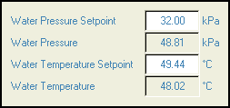

KineticaRT Studio Display

Features
The Display control displays the value of a numeric channel.
It has the following features:
-
Display of the channels description or a custom description
-
Display of the channels tooltip or a custom tooltip
-
Display of the channels units.
-
Display of the channels values using a text or numeric display.
-
Optional user entry of new values and setting of the connected channel.
-
Checking of entered values against the channels minimum and maximum properties
for numeric channels.
Connection
The KineticaRT Studio Display should be connected to channels containing values
of type KineticaRT.Values.Double or KineticaRT.Values.Text.